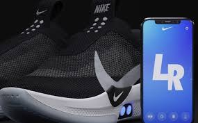

La multinacional Nike presentó sus nuevos tenis Adapt BB, que ajustan automáticamente al pie sus agujetas al presionar un botón. Un nuevo diseño inspirado en el famoso calzado que luce el personaje de Marty McFly en la película estadounidense 'Regreso al Futuro II' (1989), pero esta vez a un precio algo más accesible. Las Adapt BB constan de dos botones ubicados en la parte lateral de la suela que sirven para aflojar o apretar el calzado, aunque Nike diseñó una aplicación para teléfonos que permite controlarlos y que ofrece otras funciones: conocer el estado de la batería de las zapatillas, ajustar la tensión y cambiar el color de las luces en los botones de mando. Además, es posible guardar configuraciones personalizadas del ajuste para diferente situaciones, como por ejemplo, correr, sentarse o jugar baloncesto. Nike aseguró que lanzará actualizaciones regularmente con más funciones.
Nike se ha dado a la tarea de lanzar uno tenis “baratos” y la acción se ha convertido en una importante lección para las marcas, que buscan innovar a partir de elementos mediante los que se descubre el interés que tienen estos productos. Los tenis “económicos”, que tienen un precio de lista de 400 dólares, son la nueva propuesta de Nike por dinamizar la categoría de tenis que creo, con calzado que se amarra solo y que comenzó con gran éxito con los Nike Mag, que han sido uno de los mayores símbolos de diseño en calzado e innovación, debido a la funcionalidad e interés que generó en el consumidor.
Para mas informacion:
Tenis TecnologicosContactate con nosotros a este numero: 644-505-2139